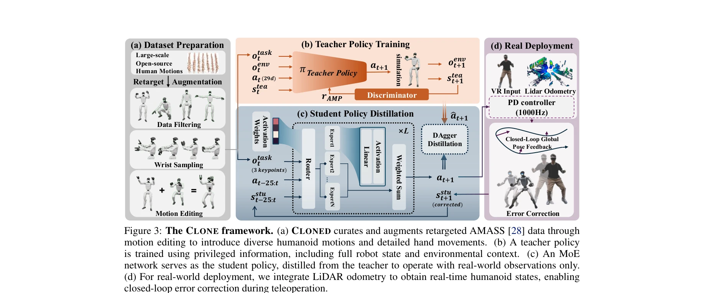

저자: Yixuan Li, Yutang Lin, Jieming Cui, Tengyu Liu, Wei Liang, Yixin Zhu, Siyuan Huang | 날짜: 2025-06-10 | URL: https://arxiv.org/abs/2506.08931
CLONE은 MoE 기반 폐루프 제어 시스템으로 MR 헤드셋의 헤드와 손 추적만으로 휴머노이드 로봇의 전신 협응 동작을 정밀하게 원격 조종하고 장시간 작업에서 위치 드리프트를 최소화한다.

Figure 3: The CLONE framework. (a) CLONED curates and augments retargeted AMASS [28] data through
Figure 3: The CLONE framework. (a) CLONED curates and augments retargeted AMASS [28] data through
총평: CLONE은 MoE 기반 폐루프 제어와 최소 입력 인터페이스를 결합하여 휴머노이드 텔레오퍼레이션의 근본적 제약을 해결한 선도적 연구로, 전신 협응과 장시간 정밀 제어를 동시에 달성한 최초의 실제 시스템 구현이다.